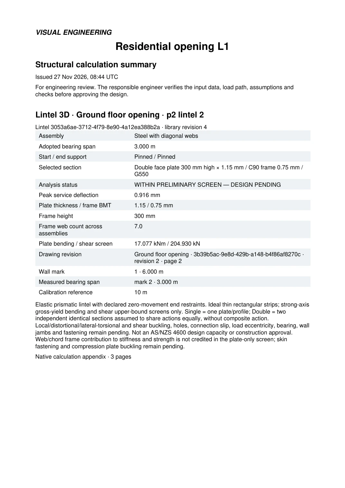

Lintel over a residential opening
Wall W1 measures 6 m on the floor plan. The two bearing centres are 3 m apart. The issued lintel uses the measured span, a steel frame with alternating diagonal webs and a roof load preset including solar panels.
Follow each service and ultimate combination to its bearing reactions. The engineer verifies the actual jambs, fixings, section stability and load path before approving the detail.
Loading the report…
